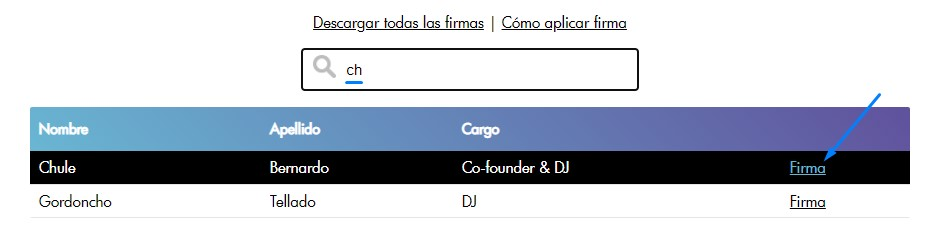
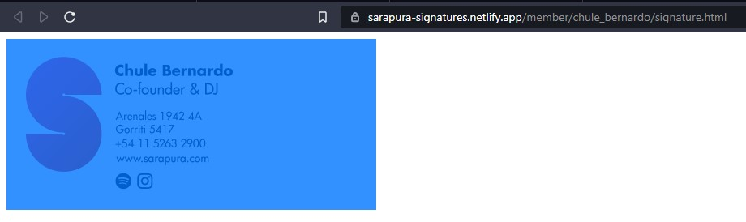
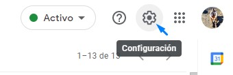
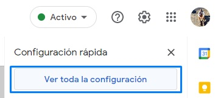
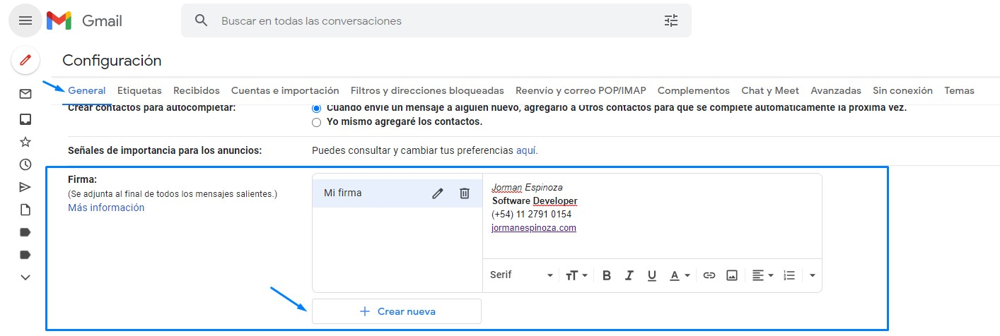
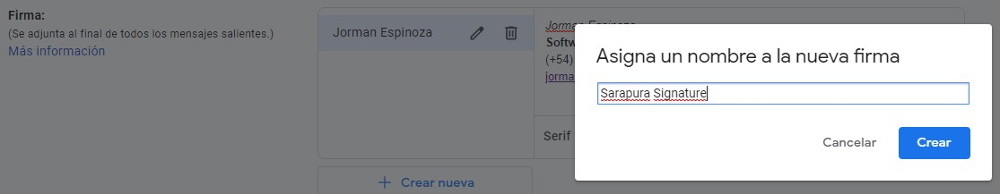
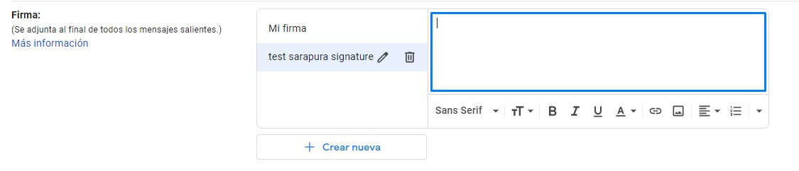
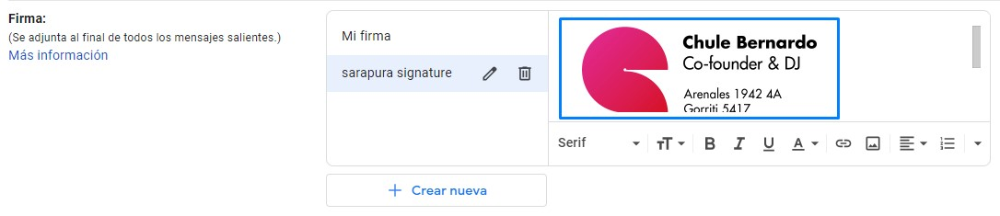
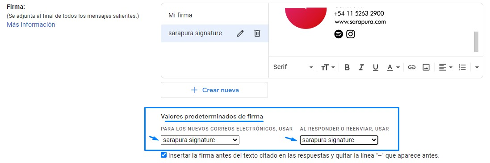
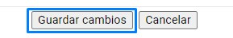

Aplicación de firma
A continuación, los pasos para aplicar la firma en un servicio de gestión de correos electrónicos (para este caso
Gmail.
- Ir al buscador de firmas mediante este enlace
- Ubicar la firma requerida mediante el buscador
-
Una vez ubicada, hacer click en el enlace Firma

-
Dentro de la url de la firma se puede realizar alguna de las siguientes acciones:
- Con el mouse, seleccionar toda la firma
- Con el teclado, realizar las siguientes combinaciones:
- Windows:
ctrl + a
- iOS:
cmd + a

- Con la firma seleccionada, proceder a copiar el contenido de la firma, bien sea:
- Con las combinaciones de tecla
ctrl + c (windows) | cmd + c (iOS)
- Haciendo click derecho con el mouse, usando la opción
Copy
- Una vez copiada la firma, ir a Gmail
-
Hacer click en la opción de Configuración, con el ícono ubicado en la parte superior derecha

-
Hacer click en la opción de Ver toda la configuración

- Ir a la pestaña General
- Desplazarse hacia abajo, hasta encontrar el apartado Firma:
-
Desde allí se encuentra el botón + Crear nueva (en el caso de que se requiera mantener las anteriores)

-
En el caso de que se requiera crear la misma, basta con nombrar la firma y hacer click sobre el botón Crear

-
Caso contrario basta con limpiar el espacio de la firma. Dejando el espacio de la misma en blanco.

-
Posteriormente pegar la firma en el espacio, haciendo click derecho y seleccionando la opción Pegar, o mediante el teclado mediante las combinaciones:
- Windows:
ctrl + v
- iOS:
cmd + v

- Justo debajo se encuentra el área Valores predeterminados de firma
- Desde allí, seleccionar firma deseada para las opciones

- Finalmente, ir al final de la sección y hacer click en el botón Guardar cambios

- Listo